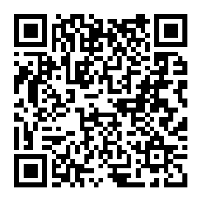

核医学检查（如 PET/CT、骨显像）共 6 个主要步骤
请按指引顺序配合完成
💡 点击各步骤卡片可展开查看详细的检前准备与要求
1
预约登记与审核
出示申请单 → 核对身高体重 → 确认具体时间
- 现场确认： 携带临床医生开具的核医学检查申请单至核医学科登记窗口。
- 基础数据采集： 工作人员需精准测量您的身高与当前体重，这直接决定了后续显像剂的精确注射注射剂量。
- 严格准时： 由于核医学检查所用的放射性药物具有半衰期且多为当天专人订制，请务必严格按照预约的具体时间段到院，迟到可能导致无法检查。
2
检查前关键准备
空腹要求 → 停药控糖 → 穿着要求
🚨 极其重要！不合要求将影响诊断或重新预约
- 饮食控制（PET/CT）： 检查前需完全空腹至少 6 小时（禁食、禁含糖饮料、禁输注葡萄糖）。可适量饮用纯清水。
- 避开高糖： 检查前一天请进食低碳水化合物、高蛋白质食物，避免剧烈运动。
- 特殊项目停药：
- 甲状腺显像： 检查前需遵医嘱停用含碘药物、海带紫菜等食物 2-4 周。
- 糖尿病患者： 需提前向科室说明，控制血糖在理想范围（通常要求空腹血糖值 < 11.1 mmol/L）。
- 衣着穿戴： 请穿着宽松、舒适、无金属配件（如金属拉链、扣子、亮片）的衣物。检查前需摘除项链、钥匙、假牙及手机等。
3
显像剂静脉注射
建立静脉通道 → 精准剂量注射
- 安全问询： 注射前护士会再次核对您的基本信息及妊娠/哺乳哺乳史（孕妇非必要不建议做此检查）。
- 药物注射： 在专用的屏蔽注射室内，通过静脉留置针为您注入微量的放射性示踪药物（如 18F-FDG ）。
- 无需恐慌： 注射剂量极小，无药物过敏反应，对人体产生的辐射均在国际安全可控范围。
4
注射后静候摄取
专用休息室避光休息 → 闭目放松50-60分钟
- 绝对安静： 注射后请在指定的单人或隔离休息室内闭目静坐或平卧放松，期间请勿刷手机、看书、交谈或随意走动。因为肌肉活动和大脑思考会导致药物错误聚集在对应区域，干扰病灶诊断。
- 多喝清水： 遵医嘱在休息期间适量饮用提供的纯净水（约 500-1000 毫升），以协助多余药物的清除并充盈胃肠道。
5
上机显像扫描
排尽尿液 → 平卧扫描 → 耗时约15-30分钟
- 临考排尿： 临上机前，请遵照医生指引前往专用厕所彻底排尽尿液，避免膀胱区药物过浓遮挡盆腔病灶。注意切勿让尿液沾染衣物或皮肤。
- 静止平卧： 仰卧于检查床上，扫描期间身体千万不能移动，配合技师口令屏气（若需要）。移动会产生重影（伪影），导致图像报废。
- 延迟扫描： 部分患者因体内药物代谢较慢，可能需要在首次扫描结束后等待一段时间进行“延迟显像”，请听从通知，切勿擅自离开。
6
检查后注意事项
多饮水多排尿 → 24小时内远离特殊人群
- 加速代谢： 检查结束后请多喝水、多排尿，残留体内的微量放射性示踪剂会通过尿液迅速排出体外。
- 辐射安全距离： 检查后 24 小时内，请尽量避免紧密接触孕妇及婴幼儿。保持 1-2 米以上的安全距离。
- 暂停哺乳： 哺乳期女性进行检查后，应当暂停母乳喂养 24 小时，期间乳汁吸出倒弃。
📌 报告领取： 检查完成 24-48 小时后，您可在医院自助取片机上打印纸质报告，或关注官方微信公众号查询电子报告。

扫码保存或分享本指南
手机端长按页面可保存为书签
转发给家属，提前做好各项准备